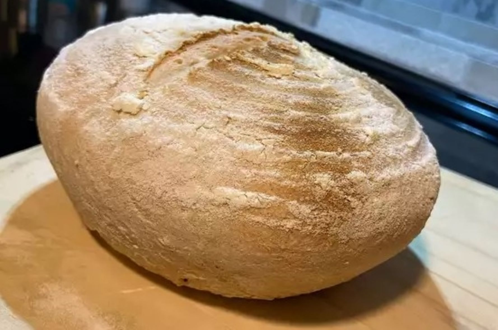

Sourdough Bread Recipe
Ingredients
- 100 grams sourdough starter
- 250 grams water
- 8 grams kosher salt
- 394 grams bread flour
- rice flour for bread form (banneton)
- 1 10-inch banneton (proofing basket)
Directions
- Step 1: Measure out starter into a bowl. Add water, salt, and bread flour. Mix until ingredients are well blended into a very sticky dough. Cover with aluminum foil; let rest 4 hours at 70 to 75 degrees F (22 degrees C).
- Step 2: With wet hands, fold dough over on itself 3 or 4 times. Cover with foil and allow dough to ferment for 2 more hours.
- Step 3: Generously dust a bread form with rice flour (see Chef's Note for banneton substitution).
- Step 4: Scrape dough out onto a lightly floured work surface (you can use bread flour or all-purpose flour). Shape into a ball with a smooth, unbroken surface, using just enough flour on the surface to keep it from sticking. Transfer smooth-side down to banneton. Pinch together the rougher edges of the surface toward the center to smooth them and maintain the round ball shape.
- Step 5: Cover and refrigerate 12 hours to slow the fermentation process.
- Step 6: Remove loaf from the refrigerator and let it rise in a warm spot until the dough springs slowly back and retains a slight indentation when poked gently with a finger, about 3 to 5 hours.
- Step 7: Preheat oven to 450 degrees F (230 degrees C). Line a rimmed baking sheet with parchment paper.
- Step 8: Dust surface of dough with flour. Gently invert banneton over the baking sheet and transfer dough onto parchment paper. Gently brush off excess rice flour. Score the top of the dough about 1/8-inch deep with a sharp knife to create a shallow slit running across the center. Mist entire surface lightly with water.
- Step 9: Bake in the center of preheated oven until beautifully browned, 25 to 30 minutes.
- Step 10: Transfer to a rack to cool completely (do not slice loaf while it is still warm).
Nutrition Facts
- Per Serving: 205 calories
- protein 6.9g
- carbohydrates 41.2g
- fat 0.9g
- cholesterol 0.1mg
- sodium 404.8mg